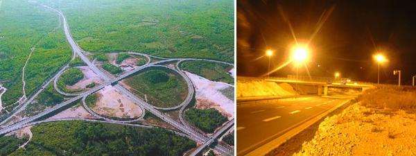
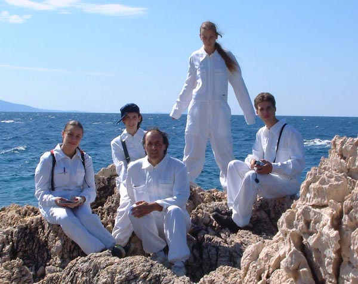

Light Pollution Group had as main goal to develop and test new equipment/methods to measure environmental effects of light pollution.
Problem
Light Pollution?
Light Pollution (LP) is term refering to all light coming out of space it was intended to light (street, parking lot, back yard etc). Main source of LP are unadequate public lamps providing light for streets, monuments and other public areas.
Consequences
> bigger power consumption (more than 30%)
> biodiversity destruction - some species (birds, fish, insects) are disappearing or their life cycle is severly affected
> danger to public health - problems reagarding human metabolism, affecting natural bio-rythm (~30% of population cannot sleep with light)
> disappearance of night sky
Actions
Astronomers were first concerned with LP, when in 1976 International Astronomical Union warned about rising LP. Later it was followed by appearance of public movements concerned about conserving the sky (Dark Sky Association in USA, Dark Sky Campaign in UK, Inqinamento luminoso in Italy).Croatian Dark Sky Association was recently established. The next step involves law regulation and is already happening - Czech Republic voted a law in 2002, as well as several regions of northern Italy - Lombardy, Venetto, Emilia-Romagna and Marche. Slovenia is concidering making one such law. In the end, old lamps shoud be replaced with new ecological models. Regulation for this exists in many places in Europe.
Research
Research has focused on one area of Istrian highway (Istarski Y) to estimate LP influence on wildlife. Project included several activities:
distribution and characterization of area's LP intensity including spectral analysis of lamps placed on the highway and measurement of light intensity over whole sky
to make a list of area's wildlife (plants and animals)
clorophil concentration measurement on reference ground and the one in the area
behaviour of plants (cucamber, pelargonije) under different light conditions.
Results
Final presentations given at the end of the school can be found here .
Arcane project dealt with spider species (arcanids) of Istrian penninsula, with ther indentification, distribution and photography.
Research goals
> to start continuos monitoring of the aracnids species of the Istrian penninsula,
> to prepare a group of zoologist for these year field work,
> to map the surroundings of the city of Visnjan, and
> to discus the construction of a monitoring system.
Results
Presentation from two day briefings are given
here .
Collaboration
Work was done under supervision of Jordi Moya-Larano (Department of Entomology at University of Kentucky, USA).
Four lectures were held during the school:
Korado Korlevic The light pollution and astronomy
Nermina Grgic Challenger Learning Center - Georgia
Zeljko Andreic How to present scientific results
Ana Bedalov Unusual atmospheric phenomena